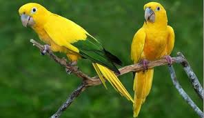

Ararajuba
A ararajuba (Guaruba guarouba), também conhecida como Guaruba, é uma ave verde e amarela, que existe somente na Amazônia e vem sofrendo com o tráfico e o desmatamento do bioma.
Pouco se sabe sobre os hábitos da ararajuba, o que dificulta a sua conservação. Atualmente, segundo o Livro Vermelho do ICMBio (2016), ela é considerada em risco vulnerável de extinção.

Referencia:
https://www.todamateria.com.br/animais-em-extincao-no-brasil/
Miquelane Melo
16/05/2020